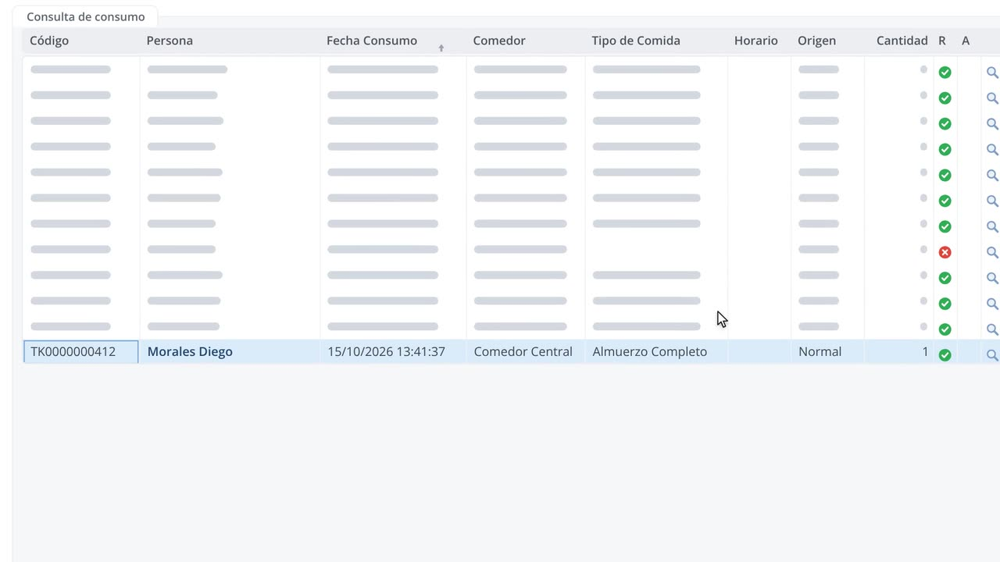

Kiosco con ticket
Huella o tarjeta, y el ticket sale impreso. El sistema avisa si la persona ya comió.
El empleado pone su huella o su tarjeta en el kiosco, se imprime su ticket y retira su comida. Tú cruzas lo servido con tu proveedor de catering, sin papeles.

Pantallas reales del módulo Control de Comedor de SquareNet.Clic en el video para verlo en pantalla completa.
Huella o tarjeta, y el ticket sale impreso. El sistema avisa si la persona ya comió.
Desayuno, almuerzo, refrigerio o especial, cada uno con su propia regla.
Comidas fuera de la regla para casos puntuales, y eventos controlados solo por número global.
Consumo detallado y resumido por tipo de comida para conciliar con tu proveedor.
2 reportes listos para usar, exportables a Excel o PDF desde el sistema.
Te mostramos Control de Comedor en una demo y te asesoramos para la cotización.